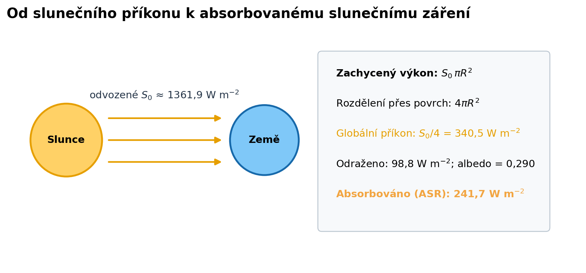
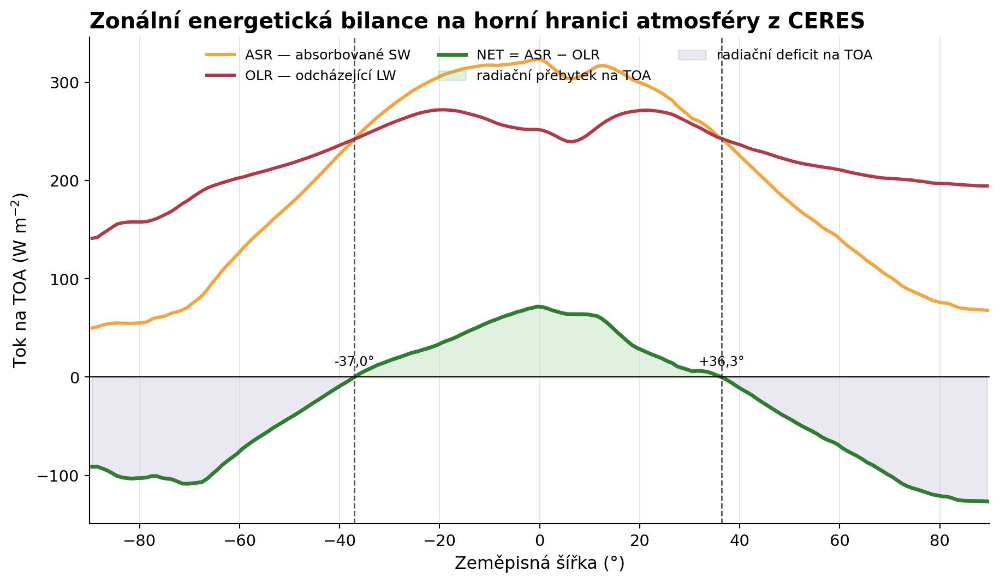
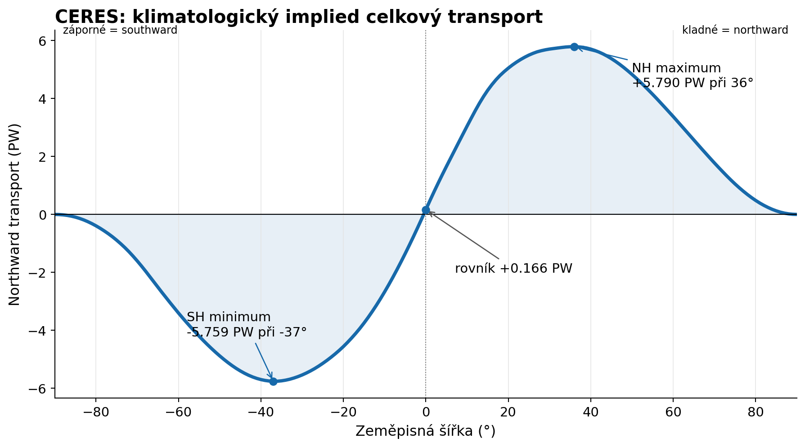
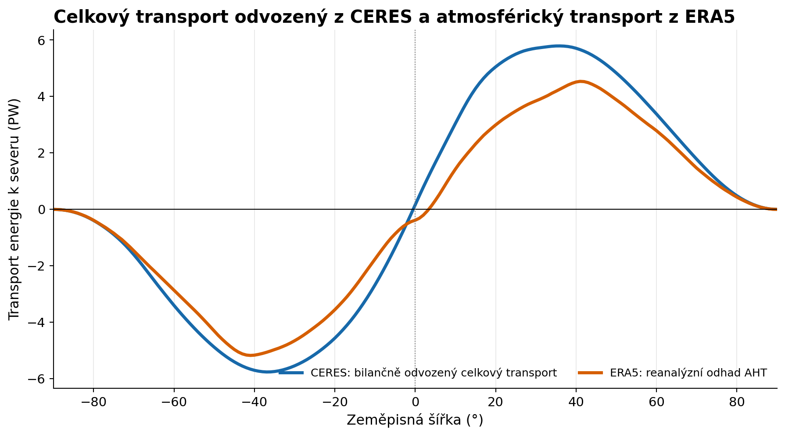
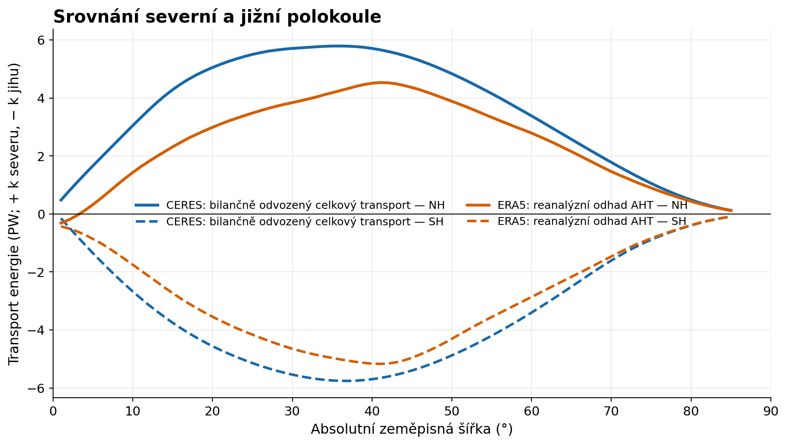
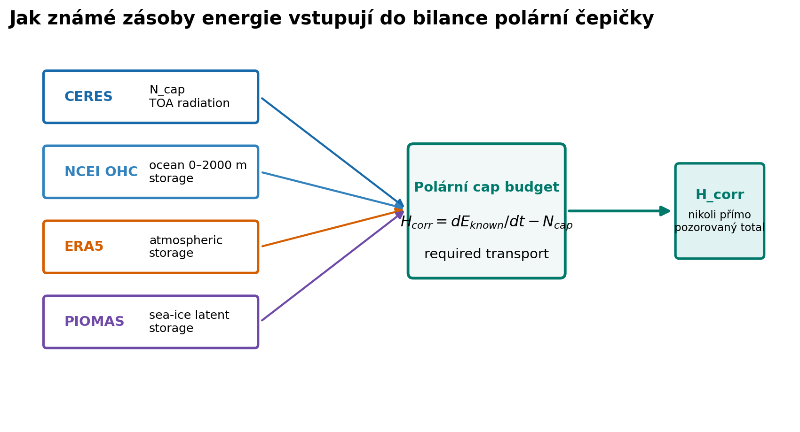
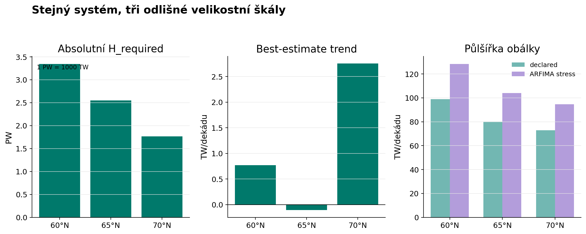
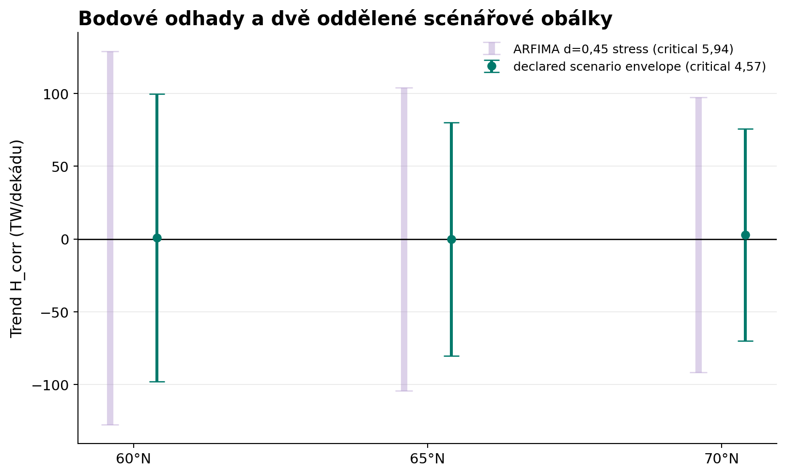
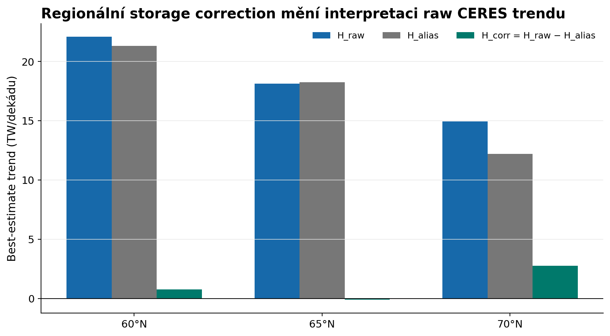
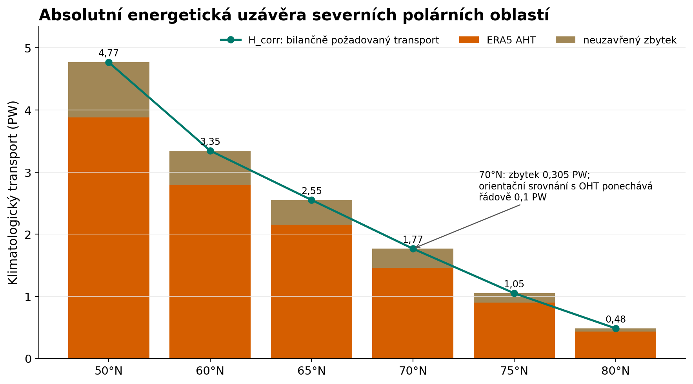

Finální didakticko-vědecký atlas · auditovaná data
Meridionální energetická redistribuce Země v éře CERES
Od slunečního příkonu a energetické bilance na horní hranici atmosféry přes několikapetawattový transport až k otázce, zda lze během společné éry použitých dat rozlišit jeho změnu.
Rozsah: observační a reanalýzní energetická bilance. Atlas neurčuje příčiny případných změn a neprovádí atribuci na CO₂, oblaka, aerosoly, radiační působení ani zpětné vazby.
Část I
Jak Země redistribuuje energii
Nejdříve absolutní energetická bilance systému, potom její malá změna v čase.
1. Slunce a geometrie energetického příkonu
Solární konstanta S₀ ≈ 1361,9 W m⁻² udává výkon slunečního záření dopadajícího na 1 m² plochy kolmé ke slunečním paprskům ve vzdálenosti Země od Slunce. Protože Země zachytává záření průřezem πR², ale globální průměr vztahujeme k celému povrchu 4πR², odpovídá tomu průměrně 340,5 W m⁻² povrchu Země. Po odečtení odraženého záření při planetárním albedu 0,290 zůstává globálně průměrně absorbováno 241,7 W m⁻² (ASR).
globální průměr příchozího SW = S₀ · πR² / 4πR² = S₀/4ASR — Absorbed Solar Radiation — znamená absorbované sluneční záření. Hodnoty jsou odvozeny z klimatologie CERES EBAF Ed4.2.1 2001–2025; S₀ je zde vypočtena jako čtyřnásobek globálního příchozího krátkovlnného toku.
Obrázek 1. Od slunečního příkonu k ASR

Jak graf číst
Solární konstanta S₀ udává výkon slunečního záření dopadajícího na 1 m² plochy kolmé ke slunečním paprskům ve vzdálenosti Země od Slunce. Země záření zachytává průřezem πR², ale globální průměr vztahujeme k celému povrchu 4πR²; proto odpovídá průměrný příkon jedné čtvrtině S₀. Část záření se odrazí, což shrnuje planetární albedo. Výsledkem je ASR, tedy část dopadajícího slunečního toku, kterou systém Země absorbuje. PW a TW jsou jednotky výkonu; W m⁻² je plošný radiační tok.
{kind=link}
{kind=link}
2. ASR, OLR, TOA a globální EEI
OLR — Outgoing Longwave Radiation — odcházející dlouhovlnné záření je tepelný radiační tok systému Země do vesmíru. TOA — Top of Atmosphere — horní hranice atmosféry je bilanční hranice mezi systémem Země a vesmírem. EEI — Earth's Energy Imbalance — energetická nerovnováha Země je pro globální průměr:
EEI = N_TOA = ASR − OLRN_TOA neboli NET používáme dále také prostorově nebo zonálně; označení EEI zde rezervujeme pro globální energetickou nerovnováhu. Země obíhá po mírně eliptické dráze: perihelium nastává přibližně začátkem ledna a afelium začátkem července. Globální měsíční EEI je přibližně od října do dubna kladná a od května do září záporná. Změnu znaménka však nezpůsobuje samotné perihelium nebo afelium; roční cyklus je výsledkem sezónně proměnlivé absorpce a vyzařování a vzdálenost Země–Slunce je pouze jednou ze součástí.
ΔE = ∫ EEI(t) dt3. Kam se energie ukládá
Kladná dlouhodobá EEI neznamená, že se veškerá energie projeví jako teplota vzduchu. Energie se ukládá do oceánu, atmosféry, pevniny a kryosféry, přičemž zdaleka největší část přebírá oceán. U ledu může významná část energie měnit skupenství jako latentní teplo bez velké změny teploty.
V této práci používáme pouze složky akumulace energie, které jsou explicitně zahrnuté v auditovaném výpočetním řetězci:
NCEI, oceán 0–2000 m.
Změna energie uložené v atmosféře z ERA5.
Latentní energie odvozená z PIOMAS.
4. Prostorově nerovnoměrná bilance
Ve vysokých zeměpisných šířkách dopadají sluneční paprsky více šikmo, takže se stejný dopadající výkon rozkládá na větší plochu. Se zeměpisnou šířkou se mění také délka dne, sezóna, oblačnost a povrchové albedo. Skutečný profil proto není symetrickou idealizací.
Obrázek 2. Zonální energetická bilance na horní hranici atmosféry z CERES

Jak graf číst
Oranžová křivka je absorbované sluneční záření, červená odcházející dlouhovlnné záření a zelená jejich rozdíl. Kladné NET znamená radiační přebytek, záporné radiační deficit. Z prostorového rozložení NET proto můžeme bilančně odvodit, jaký meridionální přenos energie je mezi jednotlivými zeměpisnými šířkami potřebný. Graf sám o sobě ale neříká, jakou část tohoto přenosu zajišťuje atmosféra a jakou oceán.
{kind=link}
{kind=link}
5. Bilanční nutnost meridionálního transportu
Přebytek energie v určité oblasti se může projevit buď akumulací energie v této oblasti, nebo jejím čistým transportem do jiných oblastí; při deficitu platí opačně.
N_TOA(φ,t) = ∂E(φ,t)/∂t + ∇·F(φ,t)Pro dlouhodobý průměr, kdy je změna zásoby energie malá vůči samotným tokům, prostorový vzor NET určuje potřebnou konvergenci či divergenci transportu. Přesný výpočet v tomto atlasu používá sférickou geometrii Země; uvedená rovnice je pouze schematickou lokální formou.
Integrací od pólu k dané rovnoběžce získáme bilančně požadovaný (implied) transport energie přes tuto hranici. Při správně uzavřené globální energetické bilanci musí transport na obou pólech směřovat k nule. Maximum transportu leží mezi oblastmi radiačního přebytku a deficitu.
6. Absolutní redistribuce z CERES
CERES — Clouds and the Earth's Radiant Energy System je satelitní radiační systém; atlas používá EBAF Edition 4.2.1. Teď přecházíme od teoretické nutnosti k velikosti transportu odvozené z dat CERES. Jde o bilančně odvozený (implied) celkový transport: vychází z pozorované energetické bilance na horní hranici atmosféry a její prostorové integrace, nikoli z přímého měření skutečného transportu energie mezi zeměpisnými šířkami.
Obrázek 3. Absolutní meridionální transport energie odvozený z CERES

Jak graf číst
Kladný směr znamená transport k severu a záporný k jihu. Na obou polokoulích transport směřuje převážně od oblastí energetického přebytku směrem k pólům a oblastem energetického deficitu. Křivka zobrazuje absolutní klimatologický transport, nikoli jeho trend. Jde o veličinu odvozenou z radiační bilance na horní hranici atmosféry a její prostorové integrace, nikoli o přímé měření skutečného celkového transportu.
{kind=link}
{kind=link}
7. Atmosférický transport z ERA5
AHT — Atmospheric Heat Transport — přenos energie atmosférou. V atlasu používáme AHT z reanalýzy ERA5 jako odhad skutečného atmosférického transportu energie. Nejde však o druhé nezávislé měření stejné veličiny, jakou odvozujeme z CERES.
Srovnání celkového transportu odvozeného z CERES a atmosférického transportu z ERA5 ukazuje podobnou velkoprostorovou strukturu, ale rozdílnou velikost. To je fyzikálně očekávatelné: CERES bilančně určuje celkový transport potřebný k vyrovnání prostorové energetické bilance, zatímco ERA5 zde představuje pouze jeho atmosférickou část.
Obrázek 4. Celkový transport odvozený z CERES a atmosférický transport z ERA5

Jak graf číst
Podobná velkoprostorová struktura je shodou prvního řádu, nikoli přesným uzavřením energetické bilance ani druhým nezávislým měřením stejné veličiny. CERES bilančně určuje celkový potřebný transport, zatímco ERA5 zde představuje jeho atmosférickou část. Rozdíl mezi křivkami nelze automaticky označit za oceánský transport: může obsahovat oceánský transport, nezahrnutou akumulaci energie, systematické chyby CERES, nejistoty prostorového mapování OHC a strukturální chyby ERA5.
{kind=link}
{kind=link}
8. Severní versus jižní polokoule
Pozorování: Celkový transport odvozený z CERES i atmosférický transport z ERA5 vykazují výrazné rozdíly mezi severní a jižní polokoulí a také nenulový transport energie přes rovník. Možnými fyzikálními souvislostmi jsou rozdílné rozložení oceánů a pevnin, rozdílný podíl oceánského transportu a energetická asymetrie mezi polokoulemi. Z těchto dat však neurčujeme, který z těchto mechanismů pozorované rozdíly způsobuje ani jak velký je jeho příspěvek.
Obrázek 5. Srovnání severní a jižní polokoule

Jak graf číst
Nejprve porovnávejte směr a průběh transportu, teprve potom jeho velikost. Celkový transport odvozený z CERES i atmosférický transport z ERA5 vykazují rozdíly mezi polokoulemi a nenulový transport přes rovník. Transport energie přes rovník je fyzikálně důležitý, protože propojuje energetické bilance obou polokoulí. Z těchto dat však neurčujeme příčinu ani velikost příspěvku jednotlivých mechanismů.
{kind=link}
{kind=link}
9. Polární oblasti vymezené zeměpisnou šířkou
Polární oblast zde definujeme jako část Země ležící severně nebo jižně od zvolené zeměpisné šířky, například severně od 60°N, 65°N či 70°N nebo jižně od odpovídajících jižních rovnoběžek. Energie uvnitř takto vymezené oblasti se může měnit v důsledku radiační bilance na horní hranici atmosféry, akumulace energie v oceánu, atmosféře a mořském ledu a transportu energie přes zvolenou rovnoběžku.
H_required = dE_cap/dt − N_cap
H_corr = dE_known/dt − N_capIndex cap v rovnicích označuje takto vymezenou polární oblast. H_corr — known-storage-corrected required transport — je bilančně požadovaný transport korigovaný o známé složky akumulace energie. Nejde o nezávisle pozorovaný skutečný celkový transport. Rozdíl H_corr − AHT je neuzavřený zbytek, nikoli automaticky oceánský transport.
Obrázek 6. Bilanční konstrukce H_corr

Jak graf číst
Levá strana představuje radiační bilanci vymezené polární oblasti, pravá známé složky akumulace energie. Pro mořský led platí E_ice = −ρLV: úbytek objemu ledu při tání představuje kladnou změnu akumulované energie, protože dodaná energie se spotřebovává na změnu skupenství. Pokud některá složka chybí nebo obsahuje systematickou chybu, promítne se to do H_corr. Šipky představují vstupy do bilanční rovnice, nikoli kauzální pořadí dějů.
{kind=link}
{kind=link}
Část II
Dokážeme zjistit, zda se tato redistribuce mění?
Absolutní transport je řádu několika PW. Hledaný trend transportu je naproti tomu řádu TW za dekádu. 1 PW = 1000 TW.
10. Absolutní transport versus trend
Transport energie může mít velkou absolutní hodnotu a přitom se v čase měnit jen velmi málo. Proto skutečnost, že dokážeme dobře rekonstruovat jeho klimatologickou velikost, ještě neznamená, že dokážeme stejně spolehlivě rozlišit jeho trend.
Obrázek 7. Absolutní transport versus jeho trend

Jak graf číst
Levý panel ukazuje absolutní klimatologický transport v řádu PW. Prostřední panel ukazuje nejlepší bodový odhad jeho trendu a pravý rozsah nejistoty v TW za dekádu. Platí 1 PW = 1000 TW. PW je jednotka výkonu, zatímco TW za dekádu vyjadřuje změnu odhadovaného výkonu v čase. Velkou absolutní hodnotu lze rekonstruovat podstatně lépe než její malou změnu.
{kind=link}
{kind=link}
11. Nejlepší bodové odhady trendu H_corr
Pro hlavní arktické hranice vycházejí nejlepší bodové odhady trendu H_corr:
| Hranice | Nejlepší bodový odhad | Jednotka |
|---|---|---|
| 60°N | +0,77 | TW za dekádu |
| 65°N | −0,11 | TW za dekádu |
| 70°N | +2,75 | TW za dekádu |
12. Monte Carlo kalibrovaná scénářová obálka
Abychom posoudili, zda jsou bodové trendy skutečně rozlišitelné od variability dat, testujeme výpočet na velkém počtu simulovaných časových řad s různými typy časové závislosti. Z těchto Monte Carlo simulací odvozujeme rozsah, ve kterém může odhad trendu kolísat i bez spolehlivě rozlišitelného signálu. Tento rozsah nazýváme Monte Carlo kalibrovaná scénářová obálka (Monte Carlo calibrated scenario envelope); nejde o univerzální 95% interval spolehlivosti.
Půlšířka obálky udává vzdálenost od bodového odhadu k jedné její hranici. U 60°N je bodový odhad pouze +0,77 TW za dekádu, zatímco základní obálka sahá přibližně o ±98,85 TW za dekádu kolem něj. Půlšířky na 60°N, 65°N a 70°N jsou 98,85, 80,12 a 72,84 TW za dekádu.
Zátěžový test s dlouhodobě přetrvávající časovou závislostí (ARFIMA) ověřuje, co se stane s nejistotou trendu, pokud odchylky v časové řadě přetrvávají a jsou vzájemně závislé po delší dobu, než předpokládají jednodušší modely. Připouští tedy pomaleji odeznívající časovou závislost. Dále jej označujeme jako ARFIMA zátěžový test.
Obrázek 8. Odhad trendu H_corr a rozsah jeho nejistoty

Jak graf číst
Bod označuje nejlepší bodový odhad, vnitřní obálka základní Monte Carlo rámec a vnější obálka zátěžový test s dlouhodobě přetrvávající časovou závislostí. Nulová čára prochází oběma obálkami u všech tří hranic, takže znaménko trendu nelze v daných rámcích spolehlivě rozlišit. Graf tedy neříká „trend je nulový“, ale „trend nebyl v dostupných datech rozlišen“.
{kind=link}
{kind=link}
13. Proč je scénářová obálka široká
Široká obálka není důsledkem pouze krátké délky dostupné řady. Významnou roli hraje také časová závislost dat, způsob výpočtu změny akumulované energie a skutečnost, že H_corr vzniká kombinací několika různých datových zdrojů. Výsledek proto závisí také na tom, jaké vlastnosti časových řad při statistickém testování připustíme.
ARFIMA zátěžový test ukazuje, že pokud připustíme dlouhodoběji přetrvávající časovou závislost, rozsah nejistoty se ještě zvětší. Při d = 0,45 kleslo pokrytí základní obálky na 0,894 a vlastní q95 vzrostlo na 5,935052; obálka se rozšířila přibližně 1,30×. Hlavní závěr se však nemění: trend H_corr v dostupných datech nebyl spolehlivě rozlišen.
14. Podpůrná větev s meziročními rozdíly
Jedna z podpůrných analýz pracuje s meziročními rozdíly. V původním statistickém vyhodnocení této větve byl použit příliš vysoký počet časových zpoždění (HAC maxlags) vzhledem k malé délce roční řady. Po opravě na lag 2 a nové Monte Carlo kalibraci používáme tuto větev pouze jako doplňkovou kontrolu citlivosti, nikoli jako hlavní důkaz.
Tato oprava nezměnila samotné bodové odhady trendu H_corr. Změnil se pouze způsob, jakým hodnotíme jejich statistickou rozlišitelnost.
15. Raw trend a storage alias
Samotný trend transportu odvozený z CERES ještě nelze automaticky považovat za skutečnou změnu meridionálního transportu. Při jeho výpočtu se používá aproximace, která rozděluje globální akumulaci energie prostorově rovnoměrně. Ve skutečnosti se však akumulace energie mezi jednotlivými oblastmi Země liší.
H_raw = ⟨N⟩_global A_cap − N_cap
H_alias = ⟨N⟩_global A_cap − dE_known/dt
H_raw − H_alias = H_corrTato rovnost je algebraická identita vyplývající z konstrukce veličin. Sama o sobě tedy není nezávislým důkazem správnosti H_corr.
Obrázek 9. Raw trend, storage alias a H_corr

Jak graf číst
Storage alias je zdánlivá změna transportu vznikající tím, že se při výpočtu skutečné prostorově nerovnoměrné akumulace energie použije její zjednodušené rovnoměrné prostorové rozdělení. Není to nový ani nezávislý fyzikální tok. Platí H_raw − H_alias = H_corr konstrukcí; přesná shoda je kontrolou implementace, nikoli nezávislým důkazem správnosti H_corr. Bodový výpočet naznačuje posun, ale data nedovolují jeho velikost ani znaménko spolehlivě rozlišit.
{kind=link}
{kind=link}
16. Neuzavřený zbytek
Rozdíl mezi celkovým bilančně požadovaným transportem a atmosférickým transportem z ERA5 označujeme jako neuzavřený zbytek (unresolved remainder). Nelze jej automaticky považovat za oceánský transport (OHT).
H_corr − AHT = neuzavřený zbytekMůže obsahovat oceánský transport, nezahrnutou akumulaci energie, systematické chyby CERES, nejistoty prostorového mapování OHC a strukturální chyby ERA5.
Obrázek 10. Absolutní energetická uzávěra severních polárních oblastí

Jak graf číst
Součet AHT a neuzavřeného zbytku je algebraicky roven H_corr, ale algebraická rovnost není nezávislou fyzikální uzávěrou. Zbytek nelze automaticky označit za OHT. U 70°N po orientačním porovnání s publikovanými odhady oceánského transportu stále zůstává rozdíl řádu 0,1 PW; absolutní bilanci proto současnými daty nedokážeme nezávisle uzavřít s přesností lepší než přibližně tento řád.
{kind=link}
{kind=link}
17. Strukturální nejistota
Původně používaná souhrnná hranice nejistoty byla po externím auditu zrušena, protože spojovala různě podložené zdroje nejistoty do jediného čísla. Nyní oddělujeme:
- časovou nejistotu trendu vyhodnocenou Monte Carlo kalibrací,
- vyčíslené metodické scénáře a testy citlivosti,
- strukturální nejistoty, které současnými daty nedokážeme spolehlivě vyčíslit.
Explicitně otevřené zůstávají regionální systematické chyby CERES; nejistota prostorového mapování a vzorkování OHC v jednotlivých polárních oblastech; strukturální nejistota trendu AHT z ERA5; OHC pod 2000 m; akumulace energie v pevnině a ledovcích; a otázka přenosu Monte Carlo kalibrace na multikomponentní H_corr.
18. Hlavní trendový výsledek
19. Co jsme zjistili
- Absolutní meridionální redistribuci energie lze z CERES bilančně rekonstruovat.
- Její velikost je řádu několika PW.
- Její velkoprostorová struktura je konzistentní s AHT z ERA5.
- Regionální akumulaci energie je při odhadu transportu nutné bilančně zohlednit.
- Po korekci akumulace energie a statistickém vyhodnocení nebyl trend H_corr na 60°N, 65°N ani 70°N spolehlivě rozlišen.
20. Co jsme nezjistili a co z výsledku neplyne
Nezjistili jsme přesnou velikost skutečného trendu transportu, jeho znaménko na hlavních arktických hranicích, přesné rozdělení celkového transportu mezi atmosféru a oceán ani příčinu případných změn.
Výsledek neznamená, že meridionální transport je konstantní, že jeho trend je přesně nulový, že se příspěvky atmosféry a oceánu nemění, že strukturální nejistoty jsou malé nebo že jsme určili příčiny případných změn. Znamená pouze: v dostupné společné řadě CERES a dalších použitých dat nedokážeme současnou metodou spolehlivě rozlišit trend H_corr na hlavních arktických hranicích.
21. Hierarchie robustnosti
Nejrobustnější částí analýzy je absolutní energetická redistribuce: zonální energetická bilance z CERES, její integrace do bilančně odvozeného meridionálního transportu a velkoprostorová shoda s atmosférickým transportem z ERA5.
Méně robustní je určení trendu transportu, protože je malé vůči absolutnímu toku, vychází z krátké společné řady a kombinuje několik datových větví.
Nejméně jistá je fyzikální interpretace neuzavřeného zbytku jako konkrétního transportního mechanismu. Proto jej automaticky neoznačujeme za oceánský transport.
22. Omezení interpretace
Atlas neurčuje příčiny případných změn energetické redistribuce — neprovádí tedy atribuci na CO₂, oblaka, aerosoly, radiační působení ani zpětné vazby. Neuzavřený zbytek nelze automaticky považovat za oceánský transport. Široká scénářová obálka neznamená, že je fyzikálně možný libovolný trend; vyjadřuje omezenou schopnost současných dat a použité statistické metody trend spolehlivě rozlišit.
23. Nezávislý audit a reprodukovatelnost
Analýza prošla nezávislým oponentním auditem provedeným modelem Claude Opus (ver. Fantom). Auditor nevycházel pouze z našich výsledných tabulek: samostatně znovu stáhl původní datové zdroje CERES, ERA5, NCEI OHC a PIOMAS a reprodukoval výpočetní řetězec od vstupních dat až k hlavním výsledkům. Kontroloval jednotky, znaménkové konvence, prostorové a plošné integrace, energetickou bilanci, korekci akumulace energie, statistické vyhodnocení trendů i reprodukovatelnost výpočtů.
Audit nenalezl chybu v použitých datech, jednotkách, znaménkách ani plošných integracích a reprodukoval hlavní výsledky analýzy. U statistického vyhodnocení doporučil několik menších úprav, zejména přesnější dokumentaci Monte Carlo kalibrace, vhodnější statistickou terminologii a doplnění ARFIMA testu s dlouhodobě přetrvávající časovou závislostí. Tyto připomínky byly následně do analýzy zapracovány.
Veřejný repozitář obsahuje zdrojový kód, redukovaná data potřebná k reprodukci výpočtů, výsledné tabulky a grafy, auditní dokumentaci a kontrolní součty souborů (checksums). Původní kompletní klimatická data nejsou kvůli své velikosti součástí repozitáře; jejich zdroje a postup získání jsou však zdokumentovány tak, aby bylo možné výpočet nezávisle zopakovat a zkontrolovat. Kompletní auditní balík je dostupný jako ZIP pro nezávislou reprodukci.
24. Datové zdroje a jejich role
| Datový zdroj | Role v energetické bilanci | Hlavní omezení |
|---|---|---|
| CERES EBAF Ed4.2.1 | Příchozí a odražené krátkovlnné záření, OLR a výsledná radiační bilance na TOA; základ bilančně odvozeného meridionálního transportu. | Regionální systematická nejistota. |
| ERA5 | Reanalýzní odhad meridionálního transportu energie atmosférou a změny energie uložené v atmosféře; v této práci jej nepoužíváme jako primární teplotní dataset. | Strukturální nejistota trendu není úplně vyčíslena. |
| NCEI OHC 0–2000 m | Změny energetického obsahu oceánu ve vrstvě 0–2000 m. | Mapování, vzorkování a chybějící oceán pod 2000 m. |
| PIOMAS v2.1 | Změny objemu mořského ledu převáděné na změny latentní energie. | Modelově-asimilační produkt s neúplně vyčíslenou strukturální nejistotou. |
Jednotlivé datové zdroje mají v energetické bilanci rozdílné role a nelze je navzájem zaměňovat. Shoda mezi dvěma odvozenými veličinami proto sama o sobě nepředstavuje nezávislé fyzikální ověření. Podrobnosti jsou v dokumentaci dat a provenance.
25. Slovníček
- ASR — Absorbed Solar Radiation
- Absorbované sluneční záření; krátkovlnný tok, který systém Země absorbuje.
- OLR — Outgoing Longwave Radiation
- Odcházející dlouhovlnné záření; tepelný radiační tok systému Země do vesmíru.
- TOA — Top of Atmosphere
- Horní hranice atmosféry; bilanční hranice mezi systémem Země a vesmírem.
- EEI — Earth's Energy Imbalance
- Energetická nerovnováha Země; globální rozdíl mezi absorbovaným slunečním zářením a odcházejícím dlouhovlnným zářením. Její časový integrál odpovídá změně celkové zásoby energie systému Země za dané období.
- NET — net TOA radiation
- Čistá radiační bilance na horní hranici atmosféry; v atlasu NET = ASR − OLR. Na rozdíl od EEI může být NET vyhodnocován také regionálně nebo podle zeměpisné šířky; kladná hodnota znamená radiační přebytek, záporná radiační deficit.
- CERES
- Clouds and the Earth's Radiant Energy System; satelitní radiační systém. Atlas používá EBAF Edition 4.2.1.
- ERA5
- Reanalýza ECMWF/Copernicus, která kombinuje pozorování s numerickým modelem a asimilací. Není přímým nezávislým měřením transportu.
- AHT — Atmospheric Heat Transport
- Meridionální přenos energie atmosférou; v atlasu používáme reanalýzní odhad z ERA5. Nejde o přímé měření transportu.
- OHT — Ocean Heat Transport
- Meridionální přenos energie oceánem. V atlasu jej automaticky neztotožňujeme s neuzavřeným zbytkem.
- OHC — Ocean Heat Content
- Tepelný obsah oceánu. Běžně používaný oceánografický název pro změnu energetického obsahu oceánu odvozenou z teplotního pole. NCEI jej počítá integrací teplotních anomálií s hustotou a měrnou tepelnou kapacitou vody. Nejde o „teplo“ ve striktním termodynamickém významu procesní veličiny Q; fyzikálně jde o změnu energie uložené v oceánu. V atlasu používáme vrstvu 0–2000 m.
- PIOMAS
- Pan-Arctic Ice Ocean Modeling and Assimilation System v2.1; modelově-asimilační produkt objemu mořského ledu převáděný na změnu latentní energie.
- H_raw
- Raw CERES bilančně odvozený transport po odstranění globálního průměrného toku. Používá zjednodušené prostorově rovnoměrné rozdělení globální akumulace energie.
- H_corr — known-storage-corrected required transport
- Bilančně požadovaný meridionální transport korigovaný o známé složky akumulace energie. Je odvozen z energetické bilance a není přímým ani nezávislým měřením skutečného celkového transportu energie.
- Storage alias
- Zdánlivá změna transportu způsobená aproximací akumulace energie. Vzniká tím, že se při výpočtu skutečné prostorově nerovnoměrné akumulace energie použije její zjednodušené rovnoměrné prostorové rozdělení. Nejde o skutečný ani nezávislý fyzikální tok, ale o rozdíl mezi touto globální aproximací a známou regionální akumulací energie. Proto může storage alias ovlivnit odhad trendu transportu, aniž by sám představoval transport energie.
- Unresolved remainder
- Neuzavřený zbytek. Rozdíl mezi bilančně požadovaným transportem H_corr a atmosférickým transportem AHT. Nelze jej automaticky považovat za oceánský transport. Může zahrnovat oceánský transport, nezahrnutou akumulaci energie i systematické a strukturální chyby použitých datových větví.
- MC-calibrated scenario envelope
- Monte Carlo kalibrovaná scénářová obálka. Rozsah, ve kterém může odhad trendu kolísat při simulovaných vlastnostech časové řady použitých v daném statistickém scénáři. Slouží k posouzení, zda lze trend spolehlivě odlišit od variability a nejistoty. Není univerzálním 95% intervalem spolehlivosti.
- ARFIMA — Autoregressive Fractionally Integrated Moving Average
- Statistický model časové řady schopný reprezentovat dlouhodobě přetrvávající časovou závislost, kdy vliv minulých odchylek odeznívá pomaleji než u běžných krátkopaměťových modelů. V atlasu jej používáme jako přísnější zátěžový test citlivosti trendové nejistoty, nikoli jako tvrzení, že skutečná klimatická data nutně sledují právě ARFIMA proces.
- PW
- Petawatt: 1 PW = 10¹⁵ W = 1000 TW. V atlasu se používá pro velikost absolutního meridionálního transportu energie.
- TW
- Terawatt: 1 TW = 10¹² W. Mnohem menší trend transportu se v atlasu vyjadřuje v TW za dekádu.
- Klimatologický průměr
- Časový průměr veličiny za zvolené víceleté období. V atlasu slouží k popisu typické absolutní struktury energetické bilance a transportu; není to trend ani údaj o jejich změně v čase.
26. Závěr
Země v klimatologickém průměru redistribuuje mezi zeměpisnými šířkami energii v řádu několika petawattů. Tuto absolutní strukturu lze z CERES bilančně rekonstruovat a její velkoprostorový průběh je konzistentní s atmosférickým transportem z ERA5.
Bodové odhady trendu této redistribuce během společné éry použitých dat jsou proti absolutnímu transportu velmi malé. Jejich nejistota je však natolik velká, že současná datová sestava na hlavních arktických hranicích nedovoluje spolehlivě určit ani znaménko, ani velikost trendu.
27. Závěrečná metodická poznámka
Tento atlas vychází z energetické bilance a kombinace observačních a reanalýzních dat. Absolutní meridionální redistribuci energie dokážeme bilančně rekonstruovat podstatně lépe než její změnu v čase. Analýza neurčuje příčiny případných změn a neprovádí jejich atribuci na jednotlivé fyzikální mechanismy.
Hlavním výsledkem trendové části proto není nulový trend, ale skutečnost, že jeho znaménko ani velikost nebyly v dostupných datech spolehlivě rozlišeny.